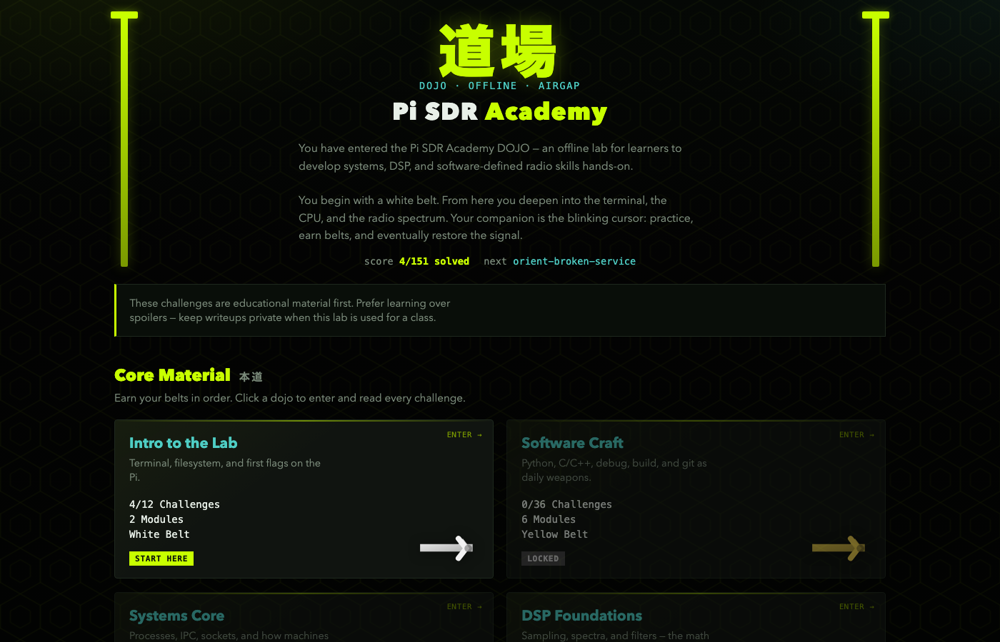
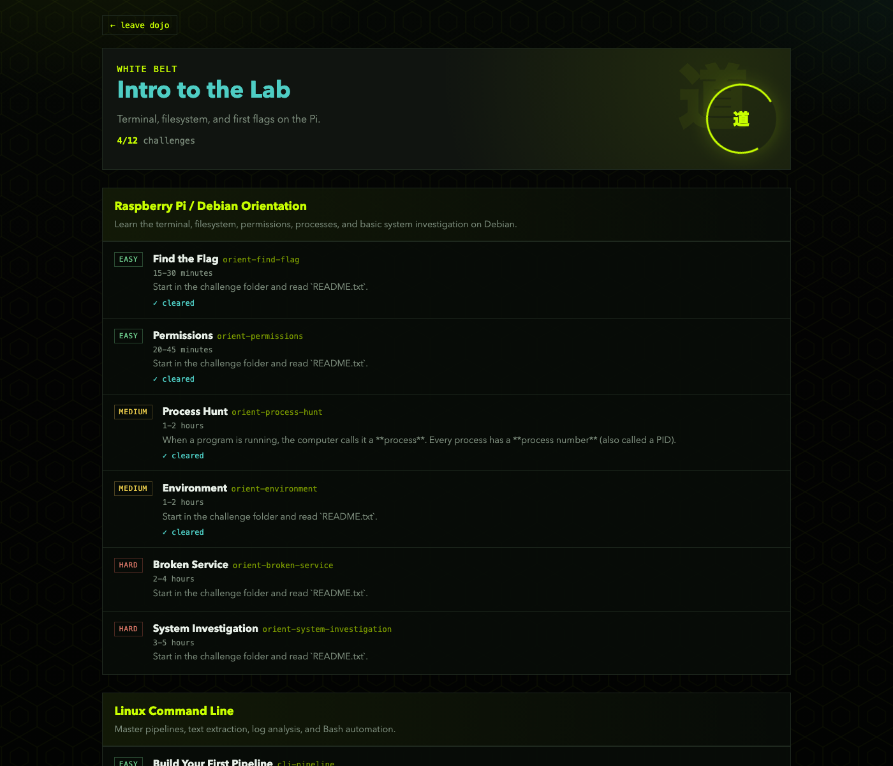

Offline dojo on Raspberry Pi: Linux → software craft → DSP → working digital receivers.
Measurable belts, challenge-based mastery, classroom UI — no cloud required.
26
Modules
151
Challenges
7
Core belts
0
Internet
Goal. Train people who can investigate a system, process a signal, recover a message, and explain why — on air-gapped hardware they own.
Air-gap / classroom / field ready
Progress reported as belts (simple for leadership)
Reusable: image once, train many cohorts
Why now. SDR and EW skills are usually split across siloed courses or cloud labs that fail offline.
Terminal, filesystem, first investigations on the Pi
12 ch · 2 mod
黄
02 · Yellow
Software Craft
Python, C/C++, GDB, CMake, Git as daily weapons
36 ch · 6 mod
橙
03 · Orange
Systems Core
Processes, IPC, sockets, how machines run code
12 ch · 2 mod
緑
04 · Green
DSP Foundations
Sampling, spectra, filters — math behind radio
18 ch · 3 mod
青
05 · Blue
Radio Path
IQ, GNU Radio, BPSK/QPSK, pulse shaping, sync
36 ch · 6 mod
紫
06 · Purple
RX & Security
Full receivers, protocol RE, SDR security CTF
18 ch · 3 mod
黒
07 · Black
Capstone Blackout
End-to-end recovery when the signal fails
1 ch · finale
Side quest · 茶帯
Brown · Language Qualification —
optional depth track: Python, modern C++, GNU Radio C++ (parallel to core belts).
3 mod · unlock anytime
Product + example flow 体験

UI · Dojo map

UI · Inside a belt
Example · Find the Flag (White Belt)
1
Start
next
Load ~/challenge
2
Brief
README.txt
Mission + tools
3
Solve
find · cat
Hunt planted flag
4
Score
./submit
or ./check
5
Advance
next
Toward belt
Ask: endorse Pi SDR Academy as the standard offline systems→SDR training path —
a durable asset that compounds every cohort, instead of one-off decks or Internet-bound labs.